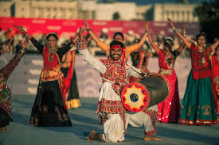
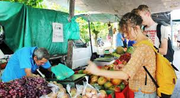

Experiencing Culture Through Travel Is Important
Traveling is not only about seeing new places, but also about learning how people live in different parts of the world. Each country has its own traditions, and languages. Which makes your traveling unique and the people there as well. When you travel, you have the chance to experience these cultural differences. Some might find it to be challenging and may take time to get use to the way of doing things and others like myself embrace the differences with an openmind. This can include trying new foods, listening to local music, and partaking in there traditions and cultural events. These experiences will help a person gain a deeper understanding of different parts of the world around us. I think it also encourages foreigners to gain a deeper respect and appreciation for cultures and the many cultural difference. Traveling to learn other cultures allows a person to gain additonal growth and understanding to become more open-minded.
Another important part of cultural travel is connecting with people. Meeting locals and learning about their daily lives can be one of the most meaningful parts of a trip. These interactions can create lasting memories and friendships. Travelers often learn valuable lessons about communication and kindness when they step outside their comfort zone. Visiting museums, historical sites, and local markets also adds to the cultural experience. These places provide insight into the history and values of a community. Overall, cultural travel helps people see the world in a more meaningful and personal way.

